MENU
あなたのご依頼品の概算お見積りが確認できます。 Before & Afrer実例集から検索して仕上がり感をイメージできます。
検索条件を選択してください
紳士スーツ
紳士背広上着
紳士ベスト
紳士ズボン
婦人スーツ
婦人上着
婦人パンツ
婦人スカート
ジャケットブレザー
紳士ジャケット・ブレザー
婦人ジャケット・ブレザー
コート・オーバー類
ダウン製品類（コート・ジャンパー等を含む）
その他のアイテム：
ベスト
シャツワイシャツ
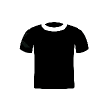ブラウス・カットソーＴシャツ
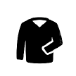セーターカーディガン
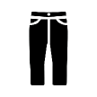ズボンパンツ
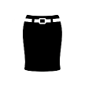スカート
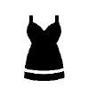ワンピース
ドレス
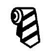ネクタイ
スカーフ・ストールマフラー
バッグ・鞄
皮革・毛皮製品類（水系洗浄を除く）
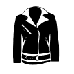部分皮革部分毛皮製品類
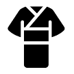和服類
その他
黄ばみ
黒ずみ
ラーメンスープ
ワイン
酒
色焼け
輪ジミ
コーヒー
はちみつ
色移り
水ジミ
魚の煮汁
イチゴ果汁
アイロンによる焦げ
インクジミ
カレー
ファンデーション
ジャスミンティー
チョコレート
醤油
朱肉
ガム
カビ
色やけ
ビール
ヘアーカラー
お茶
ドレッシング
肉汁
水性マジック
皮脂
シャンパン
アイスティー
泥はね
ねずみ取りの粘着物
口紅
牛乳
ブルーベリータルト
油ジミ
錆
アイスクリーム
プリン
ヨーグルト
ウーロン茶
デミグラスソース
ミルクティー
ボールペンインク
靴墨
血液
花粉
ブルーベリー
グリーンピーススープ
百合の花粉
ホットコーヒーラテ
カフェオレ
煤
カラー剤
マックシェイク
蛍光ペン
トマトソース
ｱｸﾘﾙ
麻
ｱｾﾃｰﾄ
ｱﾙﾊﾟｶ
ｱﾝｺﾞﾗ
ｳｰﾙ
ｳﾚﾀﾝ
ｶｼﾐｱ
ｷｬﾒﾙ
ｷｭﾌﾟﾗ
金属繊維
合成皮革
ｼﾙｸ
人工皮革
ﾃﾝｾﾙ
ﾄﾘｱｾﾃｰﾄ
ﾅｲﾛﾝ
ﾎﾟﾘｴｽﾃﾙ
綿
ﾓﾍｱ
ﾚｰﾖﾝ
皮革
毛皮
白
グレー
黒
茶
赤
黄
緑
青
紫
ピンク
金・銀
多色
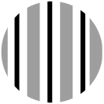ストライプ
チェック
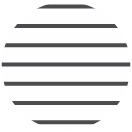横縞
花柄
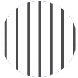縦縞
水玉
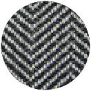杉織り
千鳥格子
ケアメンテの実例をアイテム別、シミ汚れの種別、素材別、ブランド別などで絞り込み検索することができます。
全ての実例を表示したい時は、検索条件を何も選択せずに「検索ボタン」をクリックしてください。


 Before&After/概算お見積り実例集「さがす」
Before&After/概算お見積り実例集「さがす」